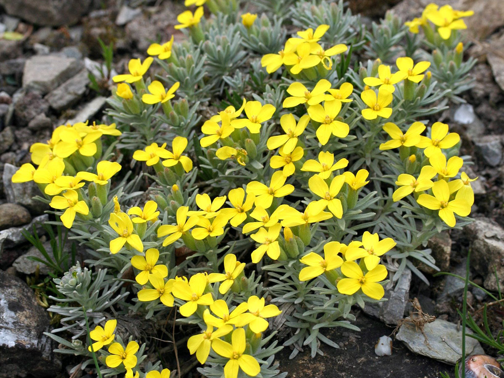
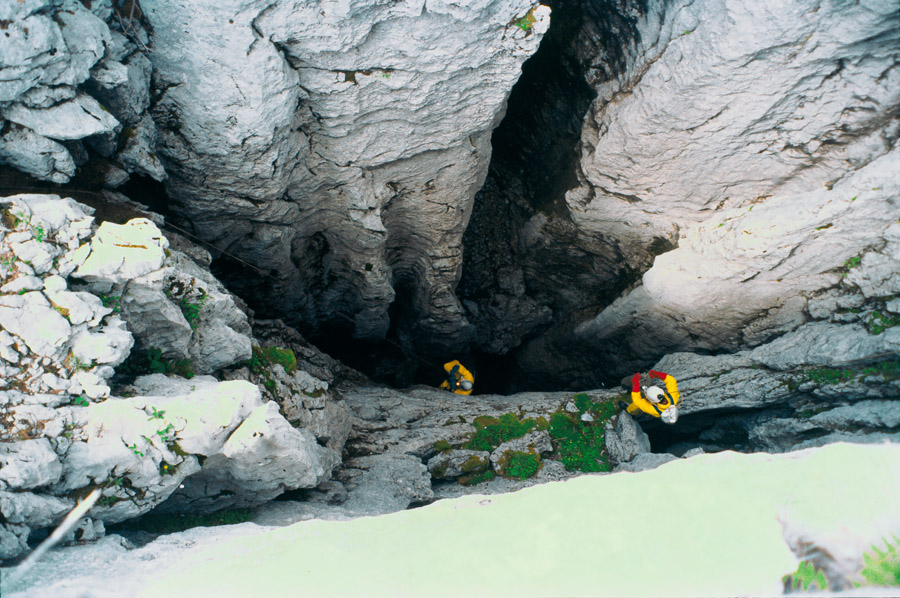
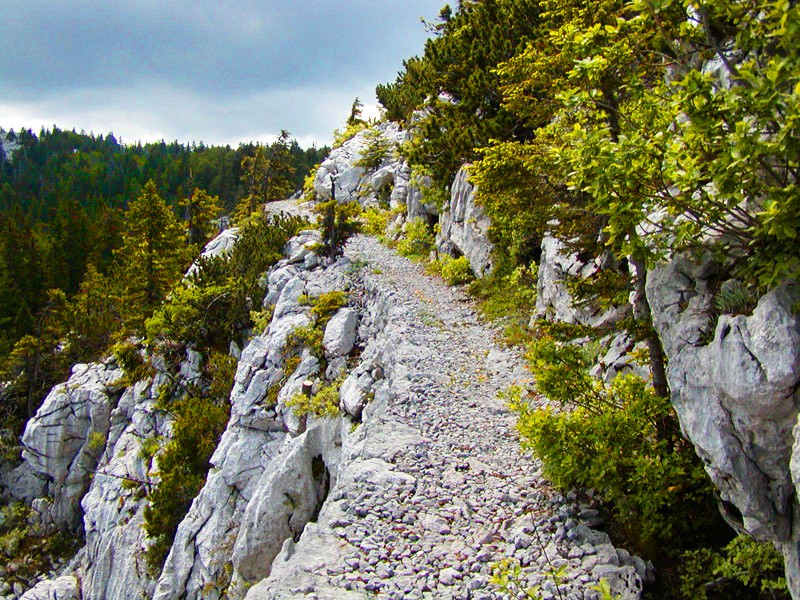
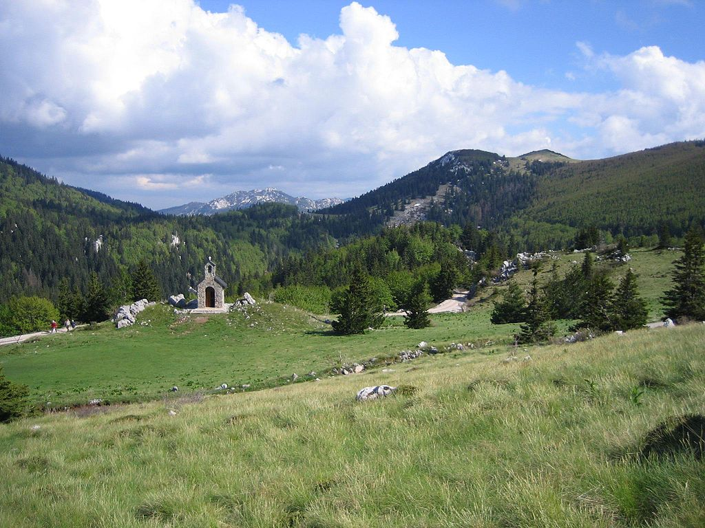
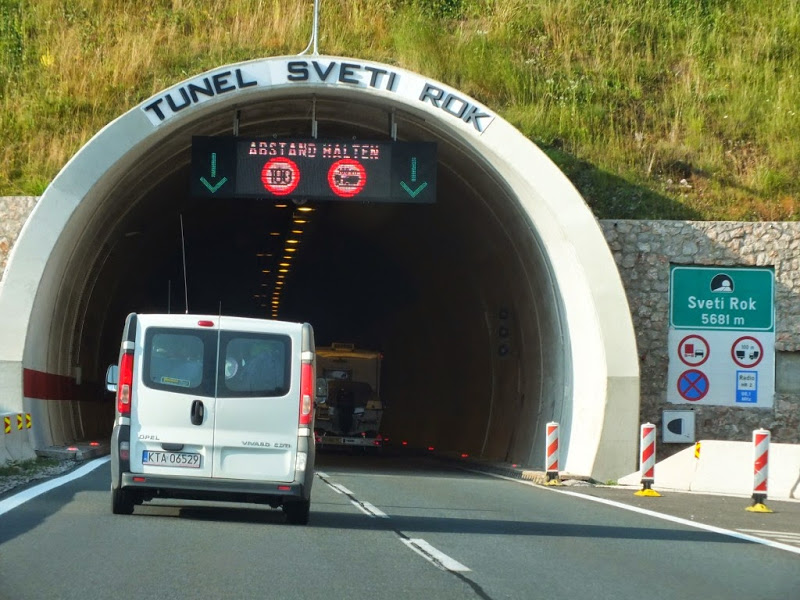

Velebitska degenija - strogo zaštićena vrsta, simbol Velebita i Hrvatske, nalazi se na kovanici od 50 lipa.

Lukina jama - najdublja jama u Hrvatskoj.

Premužićeva staza - planinarski put.

Sjeverni Velebit - Nacionalni park u sastavu Velebita.

Tunel Sveti Rok - poznati tunel koji prolazi kroz Velebit.